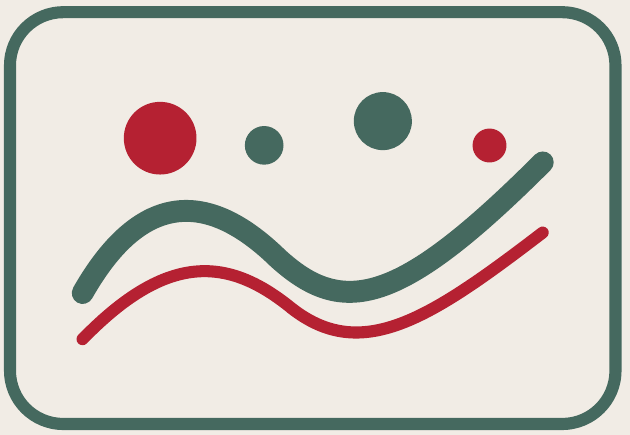
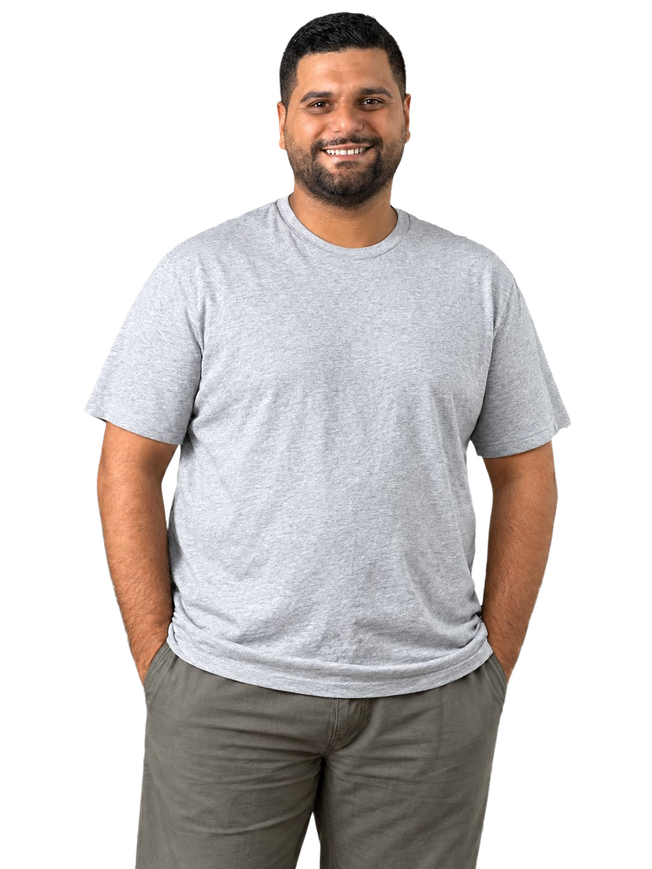
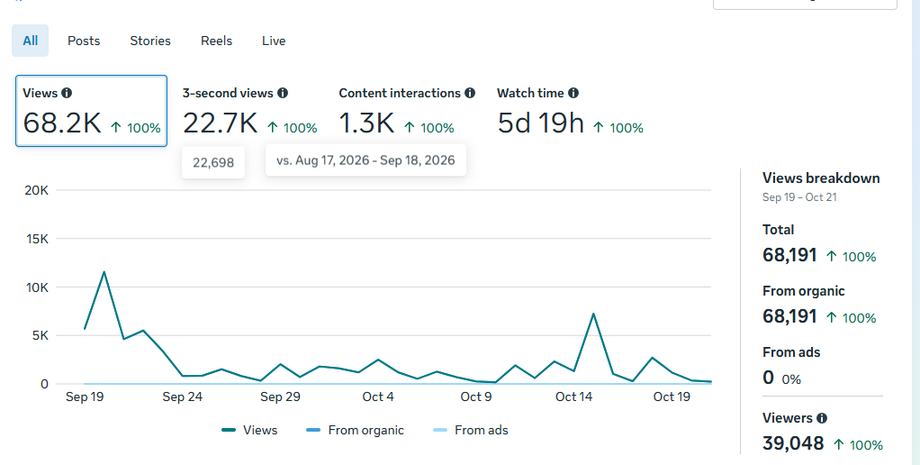
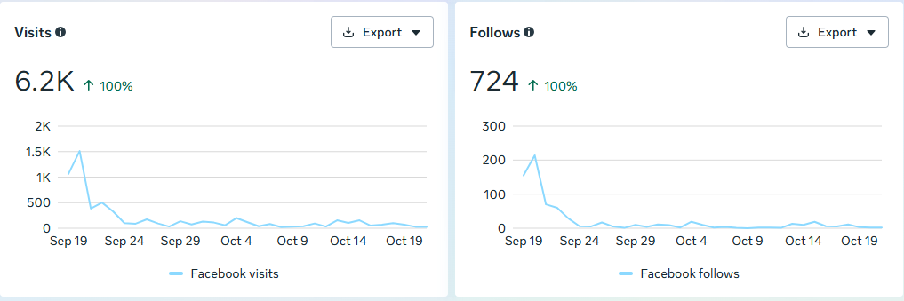
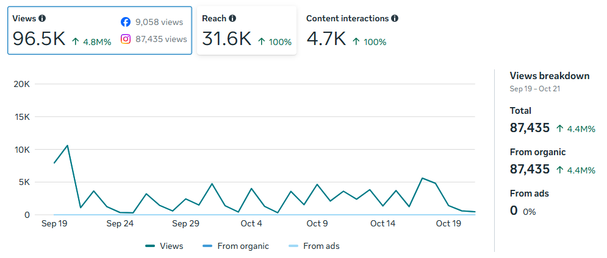
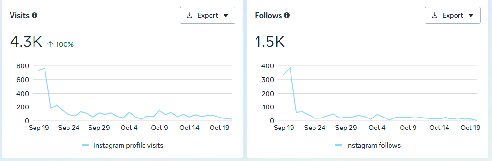
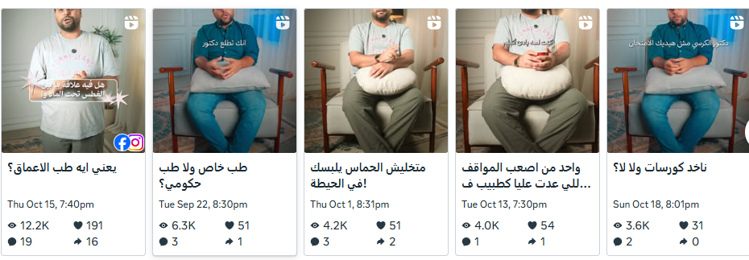
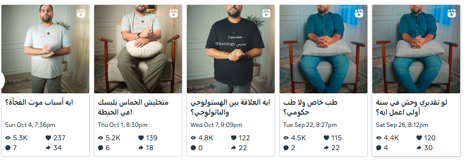
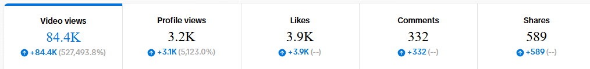
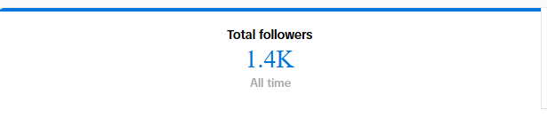

TikTok · Instagram · Facebook
Views are split almost evenly across the three platforms.


Instagram delivers 3.4K–5.1K views on nearly every post, and it is the best platform for shares and saves.






Instagram is the only platform where content gets shared. Outside the viral post, shares are 1–30 per video. Content isn't yet built to be sent to friends and family.
Instagram saves of 9–28 per video show some reference value in the content, but this is low relative to ~4K views.
TikTok likes spike with views, so they are driven by reach, not by a loyal audience.
Highest like rate per view, but the audience is unpredictable. Views swing from 456 to 31.9K for similar content.
Predictable reach and nearly all of the shares (481) and saves (236).
Solid reach, but audiences barely engage (about 1.5% likes, 1–2 shares per post). It gives visibility, not interaction.